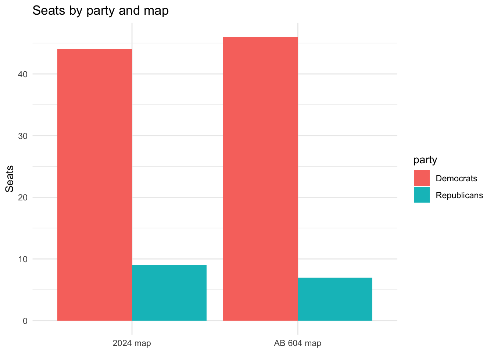
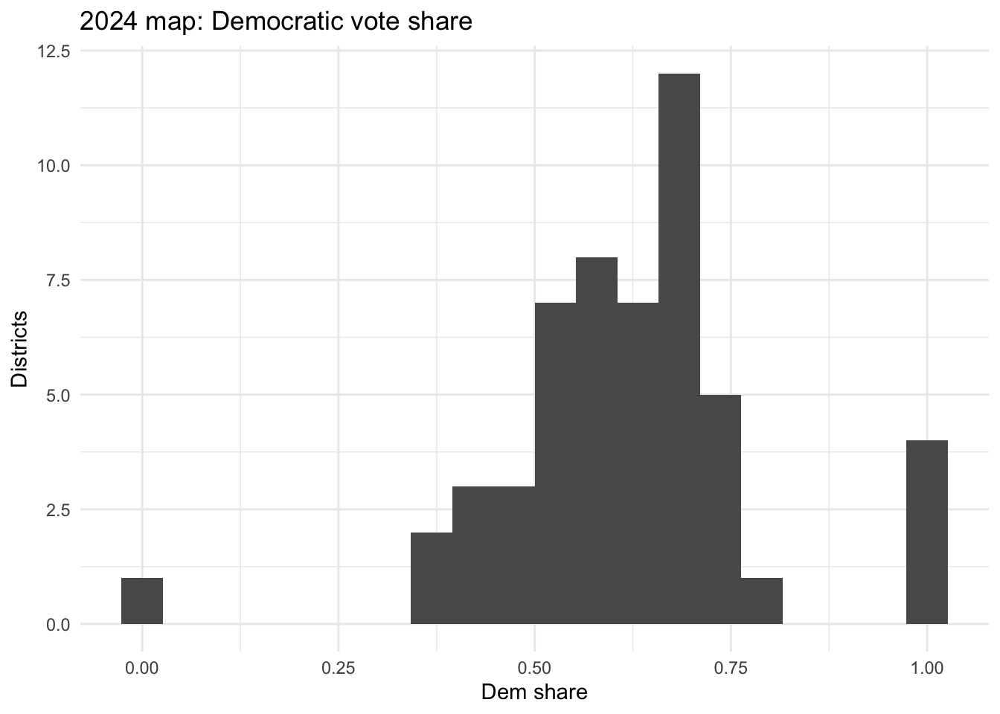
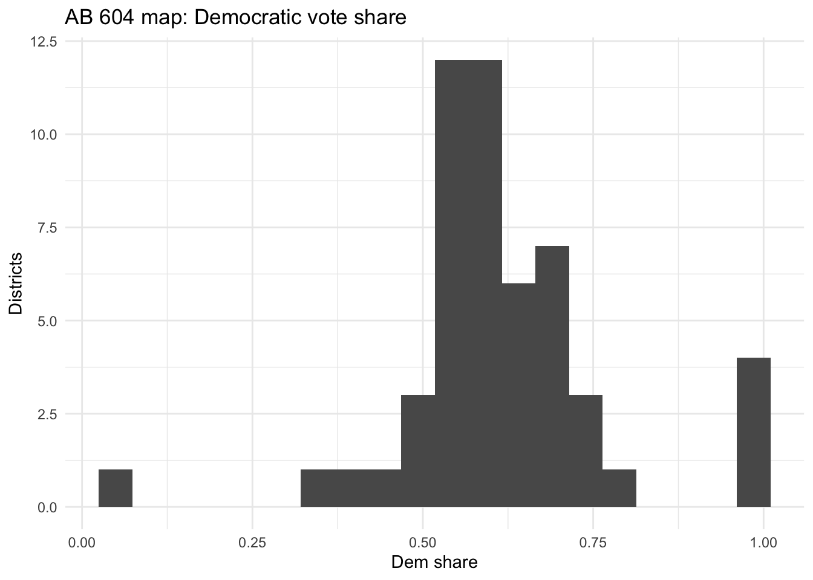

library(tidyverse)Warning: package 'ggplot2' was built under R version 4.3.3Warning: package 'purrr' was built under R version 4.3.3── Attaching core tidyverse packages ──────────────────────── tidyverse 2.0.0 ──
✔ dplyr 1.1.3 ✔ readr 2.1.4
✔ forcats 1.0.0 ✔ stringr 1.5.1
✔ ggplot2 3.5.2 ✔ tibble 3.2.1
✔ lubridate 1.9.2 ✔ tidyr 1.3.0
✔ purrr 1.0.4
── Conflicts ────────────────────────────────────────── tidyverse_conflicts() ──
✖ dplyr::filter() masks stats::filter()
✖ dplyr::lag() masks stats::lag()
ℹ Use the conflicted package (<http://conflicted.r-lib.org/>) to force all conflicts to become errorsvotes <- read_csv("data/cleaned_g24_sov_by_svprec.csv")Rows: 38657 Columns: 77
── Column specification ────────────────────────────────────────────────────────
Delimiter: ","
chr (49): fips, svprec, svprec_key, election, geo_type, assaip01, assdem01, ...
dbl (28): county, addist, cddist, sddist, bedist, totreg, demreg, repreg, ai...
ℹ Use `spec()` to retrieve the full column specification for this data.
ℹ Specify the column types or set `show_col_types = FALSE` to quiet this message.current_results <- votes |>
filter(!is.na(cddist)) |>
group_by(cddist) |>
summarise(
dem_votes = sum(demvote, na.rm = TRUE),
rep_votes = sum(repvote, na.rm = TRUE),
.groups = "drop"
) |>
mutate(
total_votes = dem_votes + rep_votes,
dem_share = dem_votes / total_votes,
winner = if_else(dem_votes > rep_votes, "DEM", "REP"),
district = sprintf("%02d", cddist)
)
ab604_results <- read_csv("data/ab604_district_results_2024_simulated.csv") |>
mutate(
district = AB604_DIST,
winner = if_else(dem_votes > rep_votes, "DEM", "REP")
)Rows: 53 Columns: 7
── Column specification ────────────────────────────────────────────────────────
Delimiter: ","
chr (2): AB604_DIST, winner
dbl (5): dem_votes, rep_votes, total_votes, dem_share, rep_share
ℹ Use `spec()` to retrieve the full column specification for this data.
ℹ Specify the column types or set `show_col_types = FALSE` to quiet this message.mean_median_score <- function(vshare) {
mean(vshare, na.rm = TRUE) - median(vshare, na.rm = TRUE)
}
wasted_votes <- function(dem, rep) {
total <- dem + rep
threshold <- floor(total / 2) + 1
dem_wasted <- if_else(dem > rep, dem - threshold, dem)
rep_wasted <- if_else(rep > dem, rep - threshold, rep)
tibble(dem_wasted, rep_wasted, total)
}
eff_gap <- function(dem, rep) {
w <- wasted_votes(dem, rep)
(sum(w$rep_wasted) - sum(w$dem_wasted)) / sum(w$total)
}
current_seats <- current_results |>
count(winner, name = "n")
current_mm <- mean_median_score(current_results$dem_share)
current_eg <- eff_gap(current_results$dem_votes, current_results$rep_votes)
ab604_seats <- ab604_results |>
count(winner, name = "n")
ab604_mm <- mean_median_score(ab604_results$dem_share)
ab604_eg <- eff_gap(ab604_results$dem_votes, ab604_results$rep_votes)
metrics_summary <- tibble(
map = c("2024 map", "AB 604 map"),
dem_seats = c(
current_seats$n[current_seats$winner == "DEM"],
ab604_seats$n[ab604_seats$winner == "DEM"]
),
rep_seats = c(
current_seats$n[current_seats$winner == "REP"],
ab604_seats$n[ab604_seats$winner == "REP"]
),
mean_median = c(current_mm, ab604_mm),
efficiency_gap = c(current_eg, ab604_eg)
)
metrics_summary# A tibble: 2 × 5
map dem_seats rep_seats mean_median efficiency_gap
<chr> <int> <int> <dbl> <dbl>
1 2024 map 44 9 -0.0116 0.255
2 AB 604 map 46 7 0.0281 0.179seat_df <- metrics_summary |>
pivot_longer(c(dem_seats, rep_seats),
names_to = "party", values_to = "seats") |>
mutate(party = if_else(party == "dem_seats", "Democrats", "Republicans"))
ggplot(seat_df, aes(x = map, y = seats, fill = party)) +
geom_col(position = "dodge") +
labs(x = NULL, y = "Seats", title = "Seats by party and map") +
theme_minimal()
ggplot(current_results, aes(x = dem_share)) +
geom_histogram(bins = 20) +
labs(title = "2024 map: Democratic vote share", x = "Dem share", y = "Districts") +
theme_minimal()
ggplot(ab604_results, aes(x = dem_share)) +
geom_histogram(bins = 20) +
labs(title = "AB 604 map: Democratic vote share", x = "Dem share", y = "Districts") +
theme_minimal()Warning: Removed 1 row containing non-finite outside the scale range
(`stat_bin()`).